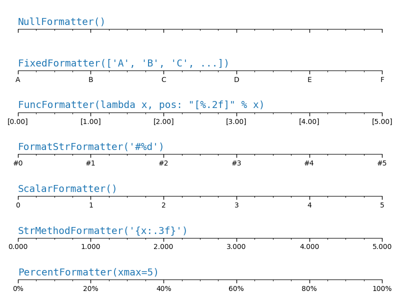

Note
Click here to download the full example code
Tick formatters¶
Tick formatters define how the numeric value associated with a tick on an axis is formatted as a string.
This example illustrates the usage and effect of the most common formatters.
import matplotlib.pyplot as plt
import matplotlib.ticker as ticker
def setup(ax, title):
"""Set up common parameters for the Axes in the example."""
# only show the bottom spine
ax.yaxis.set_major_locator(ticker.NullLocator())
ax.spines['right'].set_color('none')
ax.spines['left'].set_color('none')
ax.spines['top'].set_color('none')
# define tick positions
ax.xaxis.set_major_locator(ticker.MultipleLocator(1.00))
ax.xaxis.set_minor_locator(ticker.MultipleLocator(0.25))
ax.xaxis.set_ticks_position('bottom')
ax.tick_params(which='major', width=1.00, length=5)
ax.tick_params(which='minor', width=0.75, length=2.5, labelsize=10)
ax.set_xlim(0, 5)
ax.set_ylim(0, 1)
ax.text(0.0, 0.2, title, transform=ax.transAxes,
fontsize=14, fontname='Monospace', color='tab:blue')
fig, axs = plt.subplots(7, 1, figsize=(8, 6))
# Null formatter
setup(axs[0], title="NullFormatter()")
axs[0].xaxis.set_major_formatter(ticker.NullFormatter())
# Fixed formatter
setup(axs[1], title="FixedFormatter(['A', 'B', 'C', ...])")
# FixedFormatter should only be used together with FixedLocator.
# Otherwise, one cannot be sure where the labels will end up.
positions = [0, 1, 2, 3, 4, 5]
labels = ['A', 'B', 'C', 'D', 'E', 'F']
axs[1].xaxis.set_major_locator(ticker.FixedLocator(positions))
axs[1].xaxis.set_major_formatter(ticker.FixedFormatter(labels))
# FuncFormatter can be used as a decorator
@ticker.FuncFormatter
def major_formatter(x, pos):
return "[%.2f]" % x
setup(axs[2], title='FuncFormatter(lambda x, pos: "[%.2f]" % x)')
axs[2].xaxis.set_major_formatter(major_formatter)
# FormatStr formatter
setup(axs[3], title="FormatStrFormatter('#%d')")
axs[3].xaxis.set_major_formatter(ticker.FormatStrFormatter("#%d"))
# Scalar formatter
setup(axs[4], title="ScalarFormatter()")
axs[4].xaxis.set_major_formatter(ticker.ScalarFormatter(useMathText=True))
# StrMethod formatter
setup(axs[5], title="StrMethodFormatter('{x:.3f}')")
axs[5].xaxis.set_major_formatter(ticker.StrMethodFormatter("{x:.3f}"))
# Percent formatter
setup(axs[6], title="PercentFormatter(xmax=5)")
axs[6].xaxis.set_major_formatter(ticker.PercentFormatter(xmax=5))
plt.tight_layout()
plt.show()
Keywords: matplotlib code example, codex, python plot, pyplot Gallery generated by Sphinx-Gallery